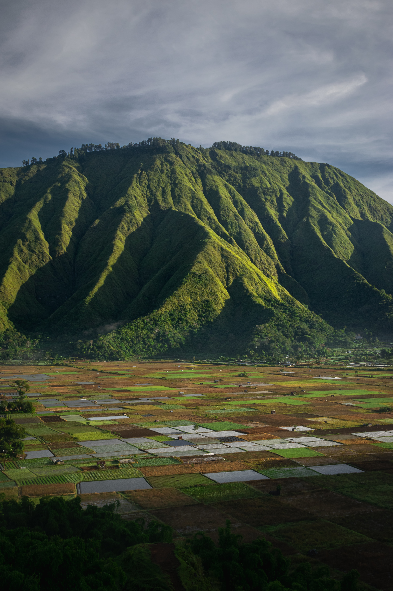

- SKY
- LAND
- SEA
Land is full of events, either positive or negative. Land has no limit.
대지는 매우 중요한 인류의 기초이다.
이 대지는 지구와 더불어 오랜 시간 진화를 거듭했다.
또한, 거대한 사건 속에서도 지속적인 회복과 성장을 거듭했다.
따라서 대지를 아끼고 사랑한다면, 대지는 지구상 생명체에게 매우 고마운 활동무대가 된다.

사진: Unsplash의Filipe Freitas